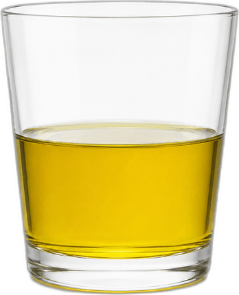
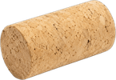
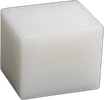

وقت لـ4 أسئلة متقدمة
(هذا يعني أننا ارتقينا مستوى )
تلقّى صائغ مجوهرات حُليًّا للفحص، بدعوى أنه غير مصنوع من الذهب الخالص. وللتحقق من ذلك، قام بغمر الحُليّ وسبيكة ذهب خالص ذات كتلة مماثلة في الماء. وبالقياس، تبيّن أن الحُليّ أزاح حجم ماء أكبر من سبيكة الذهب، وبذلك تأكدت صحة الدعوى.
بنوا حجّة علمية كاملة ودقيقة: اسحبوا الجملة المناسبة لكل عنصر من عناصر الحجة في الجدول.
في الكأس زيت زيتون كثافته 0.92 جرام/سم³. أمامكم ثلاثة أجسام مصنوعة من مواد مختلفة.
استعينوا بجدول الكثافات واسحبوا كل جسم إلى المكان المناسب: سيطفو على سطح الزيت أو سيغوص إلى قاع الوعاء.
جدول الكثافات:
| المادة | الكثافة (جرام/سم³) |
|---|---|
| سدادة الفلين | 0.24 |
| بوليبروبيلين | 0.90 |
| الألومنيوم | 2.70 |



طُلب من أربعة طلاب شرح ما هي الكثافة وكيفية تحديدها.
أيّ من الطلاب يصفون الكثافة بشكل صحيح كخاصيّة مميزة لمادة؟
اضغطوا على الشخصيات المناسبة (يوجد أكثر من واحدة).
أوريان بحاجة إلى تحديد المادة التي صُنع منها جسم غير معروف. من المعروف أن كتلة الجسم هي: 54 جرام.
الآن عليه أن يقيس حجم الجسم للوصول إلى قيمة كثافته، وعندها سيتمكن من التعرف على المادة.
ساعدوه على فهم ما هو استمرار العملية التي عليه القيام بها، رتّبوا الخطوات حسب التسلسل الصحيح: